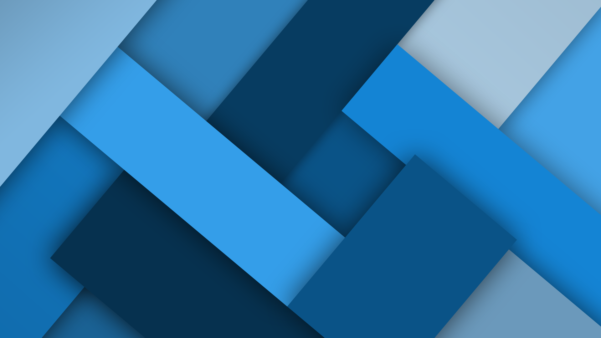

<ion-split-pane contentId="main">
  <ion-menu side="start" contentId="main">
    <ion-header class="card-background-page">
      <ion-card>
        
        <ion-avatar class="card-avatar ion-margin" *ngIf="user.image">
          
        </ion-avatar>
        <ion-avatar class="card-avatar ion-margin" *ngIf="!user.image">
          
        </ion-avatar>

        <div class="card-title">Inspections App</div>
        <div class="card-subtitle">{{user.completeName}}</div>
        <div class="card-subtitle2">v5.2.0</div>
      </ion-card>
    </ion-header>
    <ion-content>
      <ion-list>
        <ion-menu-toggle auto-hide="false" *ngFor="let page of pages">
          <ion-item
            class="clickable"
            button
            [routerLink]="page.url"
            routerDirection="root"
            [class.active-menu]="page.url.startsWith(activePath)"
          >
            {{page.title}}
          </ion-item>
        </ion-menu-toggle>
        <ion-menu-toggle auto-hide="false">
          <ion-item lines="none">
            <ion-icon slot="start" name="moon"></ion-icon>
            <ion-label> Toggle Dark Theme </ion-label>
            <ion-toggle
              (ionChange)="userWantsToChangeTheme($event)"
              id="themeToggle"
              [(ngModel)]="darkMode"
              slot="end"
            ></ion-toggle>
          </ion-item>
        </ion-menu-toggle>
      </ion-list>
    </ion-content>
    <ion-footer>
      <ion-list>
        <ion-item button (click)="userWantsToLogout()" menuClose>
          <ion-icon name="power" slot="start"></ion-icon>
          <ion-label>Sign out</ion-label>
        </ion-item>
      </ion-list>
    </ion-footer>
  </ion-menu>

  <ion-router-outlet id="main" main></ion-router-outlet>
</ion-split-pane>
